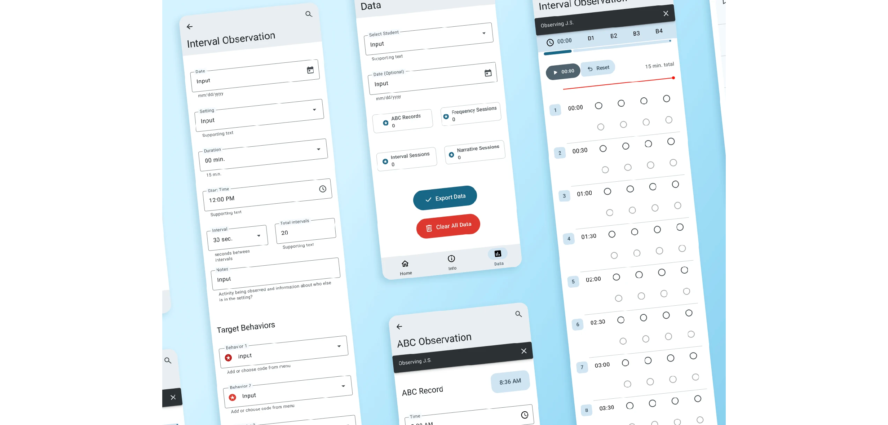

BxObs Assessment Assistant Applet
Observation Tool for Psychologists

Context
BxObs (behavior observation) gives practicing psychologists the ability to collect observation data in real-time while streamlining the process for data analysis and reporting. The BxObs Applet is a companion to the Assessment Assistant Tool developed by Cerebral Code.
The Problem
Collecting and analyzing behavior data is often slow and inefficient, especially with outdated methods like paper forms and spreadsheets. Existing digital tools are often not user-friendly or tailored to professional workflows, making it difficult for psychologists to efficiently track progress, share results, and validate interventions. This increases administrative burden and reduces time for student support.
The Solution
A streamlined, intuitive data collection resource built to empower psychologists to gather accurate, actionable data and enhance the overall effectiveness of their clinical services.
Role
UX Design
Timeline
1 Month Sprint (June 2025)
Skills Demonstrated
- • UX Research & Wireframing
- • Rapid Interactive Prototyping
- • Design System Management
- • Component & Interface Design
Tools Stack
Figma / Google Material Design 3
BxObs (Behavior Observation Tool)
Designed to meet or exceed the effectiveness of existing observation protocols, the BxObs Applet was developed using core tenets of sampling as outlined by American Clinical Psychologist Jerome Sattler, ensuring each feature derives from empirical research practices.
Trusted By Professional Practitioners
The BxObs Applet uses AI to generate concise reports and visual charts that can be easily exported, making key insights easy to share and understand. These streamlined outputs support functional behavior assessments, intervention planning, and progress monitoring—saving time, improving accuracy, and enhancing collaboration for school psychologists.
Research Phase
What the Research Tells Us
Users Need Utility & Efficiency
Through interviews with clinical and school psychologists, I identified key pain points disrupting accuracy, efficiency, and ease of use in existing observation workflows:
- • Difficult to accurately observe/record behaviors during interval sampling without a visible timer.
- • Sessions become stressful when unable to "nudge" or adjust timers for real situations, forcing manual corrections.
- • Lack of a pause button makes it hard to document unforeseen interruptions, causing incomplete data.
- • Without clear displays for elapsed/remaining time, pacing observations reliably is challenging.
- • Exporting graphs and summaries manually is repetitive and prone to errors.
Psychometric Considerations
Collaborated with licensed experts to align with industry best practices like the Revised Edition of the School Observation Coding System (REDSOCS). Categories developed include:
User Experience Architecture
Simple. Effective. Useful Flow.
Balancing simplicity and clinical utility by removing overwhelming options while preserving robust data logging.
Starting a New Observation
Exporting Observation Reports
Design System
Google Material Design 3
Selected for its adaptable guidelines and flexible components, ensuring product consistency with Cerebral Code's primary Assessment Assistant Tool and adhering to accessibility standards.
Prototyping & Tools
Breathing Life into Design
I utilized a strict modular system of component variants to map out the application's core observation methodologies, making complex data logging feel effortless.
Antecedent Behavior Consequence (ABC) Tool
Designed to allow users to quickly record the antecedents, behaviors, and consequences observed during student interactions with just a few intuitive taps.
- → Real-time modular data entry
- → Customizable tracking categories
- → Built-in background time-stamping
- → Multi-student simultaneous tracking
Analysis Overview
Overview & Market Fit
Core Uses
Data Analysis
Systematic observational analysis
Quantify Behavior
Track compliance and engagement
Gather Evidence
Identify disorder triggers
Train Observers
Familiarity with coding systems
Norming
Develop local norms for districts
View Method Limitations & Competitive Benchmarking ↓
Method Limitations
Observer Competency
Requires proper training in coding systems to execute effectively.
Limited Variables
Impossible to capture every behavioral interaction variable simultaneously.
Limited Data Volume
Short sample windows require cautious statistical analysis during conclusions.
Competitive Benchmarking
BehaviorSnap
Popular and long-standing iOS exclusive, but outdated with poor UX and no clear research base.
Behavior Observation Made Easy
Multi-platform with comprehensive methods, but limited in advanced AI reporting features.
Measurable Impact
20% Efficiency Increase
Achieved through streamlined, modern UI workflows and frictionless data discovery components.
Lessons Learned
Translating Complex Needs
Sharpened micro-interaction design and technical component skills. Learned to translate complex behavioral workflows into usable interfaces while navigating real-time data entry challenges.
Future Development
Flexible Frameworks
Future iterations will allow practitioners to toggle between custom coding systems, expanding observation scopes beyond simple quantification to deeper behavioral analysis.
Need a prototype brought to life?
I build responsive design systems in Figma and write the clean, custom frontend code or H5P files required to run them perfectly inside your web ecosystem.